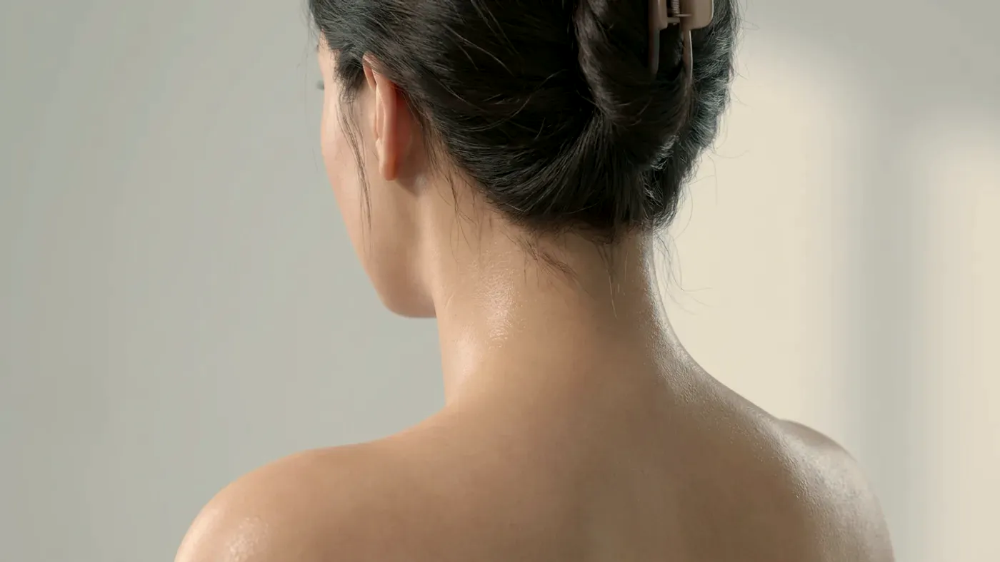

Şikâyet rehberi · Terleme
Terlemeniz kendi başına mı, bir işaret mi?
Beklenenden fazla terleme iki grupta incelenir. Birincisinde altta başka bir hastalık yoktur ve terleme belirli bölgelerde yoğunlaşır. İkincisinde terleme bir hastalığın, hormonal bir değişimin ya da kullanılan bir ilacın işaretidir. Plan bu ayrıma göre kurulur; ikinci grupta asıl hedef altta yatan nedeni bulmaktır.

Temsilî görsel · yapay zekâ ile üretildiAyrım
Hangi soruların yanıtı iki grubu birbirinden ayırır?
Dört soru yol gösterir: terleme hangi yaşta başladı, belli bölgelerle mi sınırlı, iki tarafta eşit mi ve uykuda da sürüyor mu? Aşağıdaki özellikler bir ön fikir verir; ayrım ise öykünüz, muayene ve gerekirse tetkiklerle tamamlanır.
Birincil (bölgesel) terleme
Yakınma çoğunlukla ellerde, ayaklarda ve koltuk altında, daha seyrek olarak yüzde ya da saçlı deride yoğunlaşır. Genellikle ilk gençlik yıllarında fark edilir, sağ ve sol tarafta aşağı yukarı aynı şiddettedir ve haftada birkaç kez tekrarlar. Ailede benzer yakınması olan birinin bulunması sık rastlanan bir durumdur.
En güçlü ipucu, uyku sırasında terlemenin belirgin biçimde azalması ya da hiç olmamasıdır. Heyecan, sınav ya da sıcak bir oda terlemeyi artırabilir; ancak kişiler çoğu zaman serin bir ortamda da ellerinin ıslandığını anlatır.
İkincil terleme
Başka bir durumun ya da kullanılan bir ilacın sonucu olarak ortaya çıkar. Belli bölgelerle sınırlı kalmaz, genellikle bütün vücutta hissedilir, gece uykuda da devam edebilir ve çoğunlukla ileri yaşlarda, daha önce olmayan bir yakınma olarak başlar.
Tiroit bezinin fazla çalışması, kan şekeri düşmeleri, bazı enfeksiyonlar, menopoz dönemi, bazı nörolojik hastalıklar ve kimi ilaçlar akla gelen nedenler arasındadır. Bu grupta değerlendirme genel bir muayeneyle başlar.
Hayatınızı ne kadar kısıtladığı
Terlemenin miktarı kadar gündelik yaşamı ne ölçüde daralttığı da önemlidir: tokalaşmaktan kaçınmak, kâğıtta ve klavyede ıslak iz bırakmak, dokunmatik ekranı kullanmakta zorlanmak, kıyafetleri renge göre seçmek ya da gün içinde üst değiştirmek gibi. Hep ıslak kalan deride pişik, mantar ya da bakteri enfeksiyonu da gelişebilir. Böyle bir durum varsa önce o tedavi edilir; tahriş sürerken bölgeye yönelik uygulama yapılmaz.
Muayenede izlenen sıra
Muayenede sıralama değişmez. Önce yakınmanızın ne zaman başladığı, hangi bölgeleri tuttuğu, iki tarafta eşit olup olmadığı, ne sıklıkla tekrarladığı ve uykuda ne olduğu konuşulur. Kullandığınız ilaç ve takviyeler gözden geçirilir. Ateş, kilo değişimi ve çarpıntı gibi yakınmaları da kapsayan genel bir muayene yapılır. Sonucu planı etkileyecekse tiroit hormonları, açlık kan şekeri ya da tam kan sayımı istenir. Deri bulgularına bakıldıktan sonra seçenekler en basitinden başlayarak konuşulur. Muayenehanemizin kapsamı dışında kalan yöntemler söz konusuysa bunu açıkça belirtiriz.
Gece kıyafetinizi ve çarşafınızı ıslatan terleme, nedeni açıklanamayan kilo kaybı, haftalarca süren ateş, vücudun yalnızca bir yarısında ya da tek bir bölümünde görülen terleme ve ileri yaşta aniden başlayıp bütün vücuda yayılan terleme estetik değerlendirmenin konusu değildir. Bu durumlarda önce genel sağlık değerlendirmesi yapılır; o tamamlanmadan bölgesel bir işlem konuşulmaz.
Sonrası
Diğer nedenler dışlandıktan sonra hangi seçenekler konuşulur?
Başka bir hastalık olmadığı anlaşıldıktan sonra da ilk sırada basit önlemler yer alır: ter önleyici ürünü akşam saatlerinde ve kuru deriye sürmek, nefes alan kumaşlar ve uygun ayakkabı seçmek. Bu önlemler yetmezse bölgesel bir uygulama hekim tarafından değerlendirilir.
Botulinum toksin
TER BEZİMuayenede belirlenir→Hekim muayenesi
NEDENAynı gün→Uygulama sonrası takip
İZLEMRandevuya göre→
Botulinum toksin
Koltuk altı ve avuç içi gibi bölgesel terlemede kullanılan yöntemlerden biridir; ilk basamak değildir ve etkisi zamanla azalır.
Sayfasına git →Sık gelen sorular
Merak ettiğiniz soruya dokunun, yanıtı burada açılsın
Bir adım ötesi
Terlemenizin kaynağını birlikte netleştirelim
Öykünüz, muayene bulgularınız ve gerekirse tetkikleriniz birlikte ele alınarak hangi adımla başlanacağı belirlenir.
Metni hazırlayan ve tıbbi açıdan gözden geçiren: Uzm. Dr. Rahmi Cebeci (Aile Hekimliği Uzmanı · Medikal Estetik Sertifikalı).
Buradaki anlatım herkese yöneliktir; size özel bir teşhis ya da tedavi planı sunmaz, muayenenin yerini tutmaz. Her uygulamanın etkisi kişiye göre farklı olur.